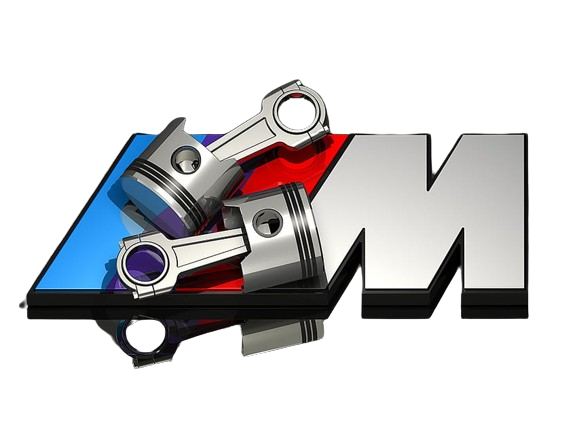
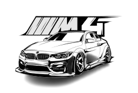
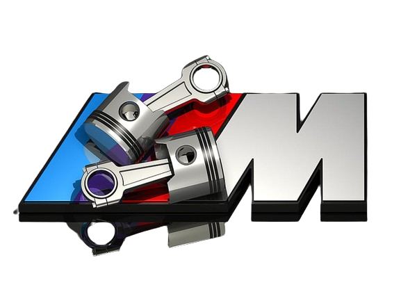
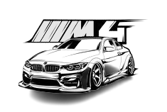
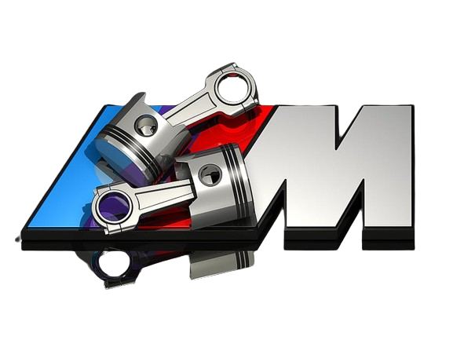
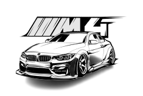

BMW, Bayerische Motoren Werke AG, is a renowned German multinational
company that produces luxury vehicles and motorcycles. Founded in 1916,
BMW initially focused on aircraft engine production and later shifted to motorcycle
and automobile manufacturing.
Their cars are known for their performance, luxury,
and advanced technology. BMW's lineup includes various series, such as the 1 Series,
3 Series, 5 Series, 7 Series, and the flagship 8 Series, offering a range from compact
cars to luxury sedans and sports cars. They also have SUVs and crossovers under the X Series
and electric vehicles like the i3 and i8, showcasing their commitment to sustainable mobility.
BMW cars are often recognized for their "ultimate driving machine" tagline, emphasizing a balance
between performance, handling, and comfort. The brand's M series represents high-performance
variants of their regular models, designed and engineered by BMW's Motorsport division,
known for their exceptional speed and handling.
Their dedication to innovation is evident
in technologies like iDrive (an infotainment system), advanced driver-assistance systems,
and electric mobility solutions. BMW has also made strides in the electric vehicle market,
with models like the i3 and i8 showcasing their commitment to sustainable driving.
Overall,
BMW's reputation for quality engineering,luxury,
and driving pleasure has made it a prominent player in the global automotive industry.

